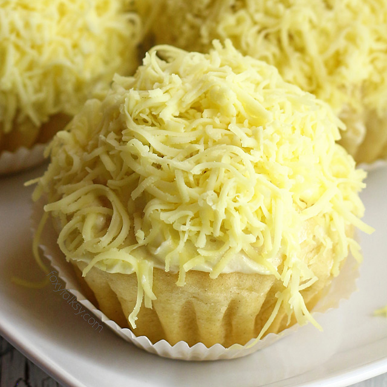
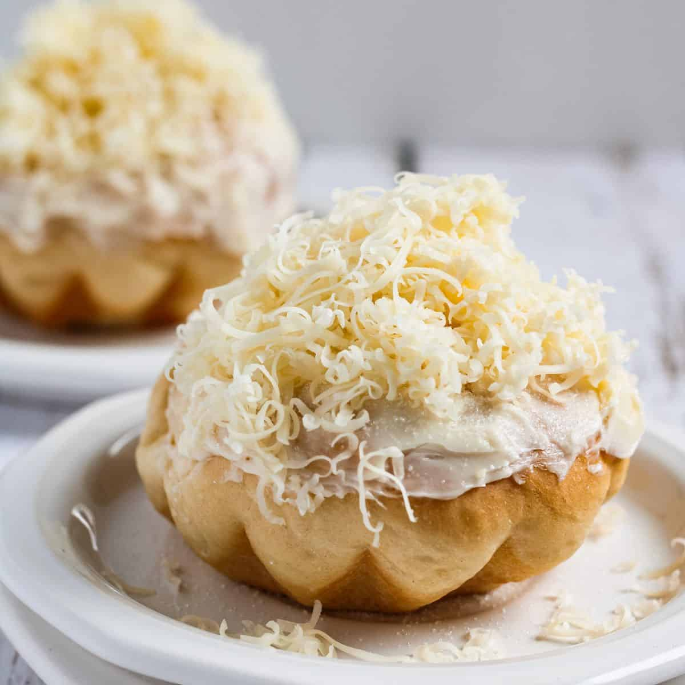
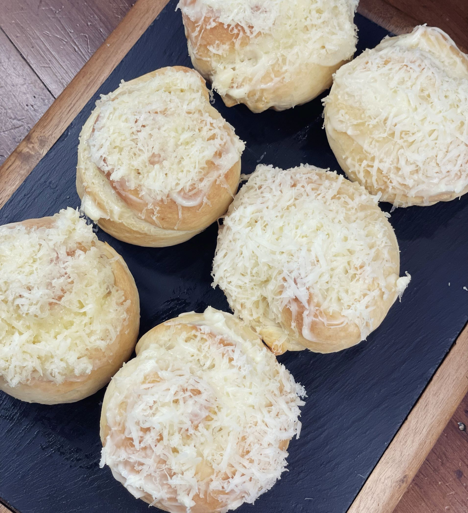
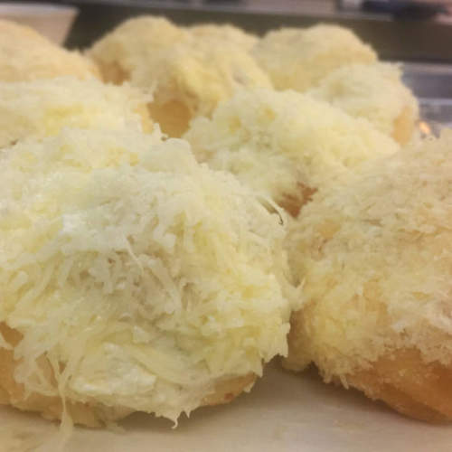
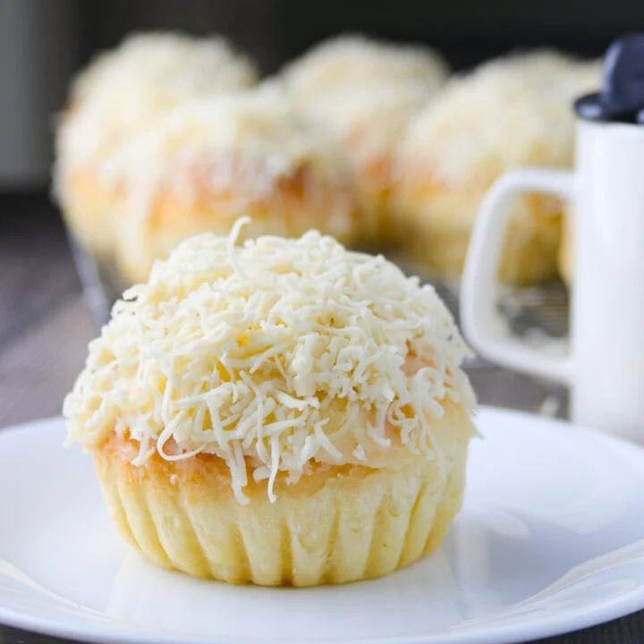

Ensaymada





History
Ang Ensaymada ay nagmula sa Spain, partikular sa Mallorca kung saan ito ay tinatawag na “ensaimada,” na traditionally ginagawa gamit ang pork lard. Dinala ito sa Pilipinas noong panahon ng Spanish colonization of the Philippines, at kalaunan ay nagkaroon ng Filipino twist. Pinalitan ang lard ng butter, at dinagdagan ng sugar at grated cheese, kaya naging mas matamis at mas rich ang lasa. Sa paglipas ng panahon, naging staple ito sa mga panaderya at kilalang pasalubong, lalo na tuwing may espesyal na okasyon.
Ingredients & Notes
All-purpose flour
Yeast
Sugar
Eggs
Milk
Butter
Grated cheese
Price
₱10